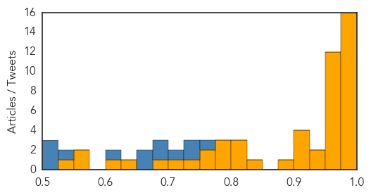

Bubonic Plague
30-Day Web Trend
0 alerts, 0 warnings
30-Day Twitter Trend
0 alerts, 0 warnings

Article Locations

Article Confidences

Top Articles:
-
No articles found for Mar 10, 2015
Top Tweets:
-
No tweets found for Mar 10, 2015
Ebola
30-Day Web Trend
0 alerts, 0 warnings

30-Day Twitter Trend
3 alerts, 5 warnings

Article Locations

Article Confidences
Top Articles:
- 1.000
- WHO to begin large-scale testing of Ebola vaccine in Guinea
- 0.999
- Monrovia club’s ebola fight not finished - Liberia
- 0.999
- Why an increase in Disease Outbreaks, part 2
- 0.998
- Ebola: A Turning Point?
- 0.997
- African tourism acts to shake off Ebola stigma
- 0.992
- Ebola drug shows some promise in first tests in West Africa
- 0.992
- Tzu Chi’s First Ebola Aid and Signing of an MOU with Healey International Relief Foundation - Sierra Leone
- 0.991
- Nurses nationwide engaged on Infection, Prevention Control « Awoko Newspaper
- 0.988
- With Ebola crisis easing, efforts to test new drugs are in jeopardy
- 0.986
- Obama to discuss Ebola response with Liberia's president
- 0.986
- WHO asks independent panel to assess its Ebola response
- 0.984
- OP ED: Sierra Leone’s President should apologize for ebola
- 0.980
- Learning the lessons of Ebola
- 0.980
- Tuesday morning fire damages vacant home in Chase
- 0.977
- Sierra Leone News: Women making it happen on the Ebola front-line « Awoko Newspaper
- 0.976
- W.W. Hastings nurse home from Ebola fight
- 0.970
- Counting the true cost of Ebola
- 0.964
- Top anesthesiologist teaches readiness on Ebola — CLU Magazine
- 0.951
- UN urges independent investigation for jailed Mauritanian activists
- 0.951
- In South Sudan town devastated by conflict, UN official condemns forced child conscription
- 0.951
- Meeting foreigner can't result in dismissal from armed forces: SC
- 0.951
- Home eviction can lead to depression, high stress
- 0.951
- Libya at 'critical juncture' as parties wrap up round of UN-supported political talks
- 0.951
- NASA space apps challenge to spark innovation
- 0.951
- Baby found alive after 14 hours in cold water
- 0.951
- iPhone turns into diagnostic kit with new apps
- 0.951
- White House pledges $100 mn to fill tech jobs
- 0.951
- Crane driver causes massive traffic jam in Dubai as he attempts suicide
- 0.947
- News in Brief 10 March 2015 (PM)
- 0.936
- Corgenix and Fio Combine Rapid Ebola Test with Automated Analysis and Data Capture to Improve Frontline Care and Case Tracking
- 0.922
- NRECA Int’l Heads to Liberia as Ebola Rates Fall
- 0.922
- Kaci Hickox, nurse who fought Ebola quarantine, leaving Maine
- 0.916
- Ebola: Patient being tested for deadly disease at Cardiff hospital
- 0.908
- China tourist train to DPRK resumes service - Headlines, features, photo and videos from ecns.cn
- 0.888
- Liberia: Simple technology, better result - UNDP boss describes autoclaves
- 0.825
- AU commends IMF for Sierra Leone debt relief
- 0.808
- PostBulletin.com
- 0.807
- Simple technology, better result - UNDP boss describes autoclaves - Liberia
- 0.807
- Facebook Update from U.S. Embassy in Sierra Leone.
- 0.792
- China resumes tourist train to North Korea after hermit state lifts Ebola ban
- 0.789
- Kaci Hickox, nurse who fought Ebola quarantine, leaving Maine
- 0.779
- LCP Conducts Training for Communicators on PREVAIL Vaccines
- 0.770
- Sierra Leone: Tzu Chi's First Ebola Aid and Signing of an MOU with Healey International Relief Foundation
- 0.764
- IT NEVER RAINS BUT IT POURS!
- 0.740
- Ghana Health Service says Ebola campaign still on-going
- 0.713
- Nurse who balked at Ebola quarantine is leaving Maine
- 0.680
- China hands over Ebola lab to S/Leone govt
- 0.630
- Midtown Medical named as top GA treatment spot for infectious di
- 0.600
- Ebola survivor encourages Liberians
- 0.574
- Lawmaker alarms over ‘poor health services’ at JFK
Showing top 50 articles...
Top Tweets:
- 0.935
- Nurse Who Balked at Ebola Quarantine Is Leaving Maine - ABC News http://t.co/QE0ukz1RIM ebola EVD
- 0.935
- Nurse Who Balked at Ebola Quarantine Is Leaving Maine - ABC News http://t.co/0K5ASM4v9I ebola EVD
- 0.930
- Nurse who fought Ebola quarantine to move out of Maine - WMUR Manchester http://t.co/3wzfg0XyAM ebola EVD
- 0.919
- Despite reported decline, struggle against Ebola continues - Workers World http://t.co/XjIzDs6G4y ebola EVD
- 0.914
- 'Every day, we cried': Out of Ebola, a new Liberia will emerge - CNN http://t.co/1IQo9fE4MT ebola EVD
- 0.894
- Postmortem Stability of Ebola Virus http://t.co/F1g4buQ3bo
- 0.891
- Ebola crisis could force Sierra Leone to diversify away from mining - The Guardian http://t.co/2Z4sdsC7kV ebola EVD
- 0.872
- Human Ebola virus infection results in substantial immune activation http://t.co/uI442Q4PbN
- 0.860
- Economist: Some high-tech solutions fail with fight against Ebola in West Africa - Minneapolis Sta... http://t.co/vlozDaDHL4 ebola EVD
- 0.820
- With Ebola crisis easing, efforts to test new drugs are in jeopardy - Los Angeles Times http://t.co/oNsYL0jfBd ebola EVD
- 0.789
- Ebola fears as patient tested in Cardiff - http://t.co/9p21lKLIva http://t.co/CTOyKhr32Z ebola EVD
- 0.779
- African tourism acts to shake off Ebola stigma - New Vision http://t.co/dSijSf4feh ebola EVD
- 0.779
- African tourism acts to shake off Ebola stigma - New Vision http://t.co/8chRD90F04 ebola EVD
- 0.765
- WHO creates independent panel to assess its Ebola response - U-T San Diego http://t.co/lIS3zPg07a ebola EVD
- 0.751
- Body mounts 'robust' immune response in the face of Ebola - Los Angeles Times http://t.co/uQQBHAcr2L ebola EVD
- 0.733
- RT: Ebola | Distribution de nourriture dans les zones où la transmission a été globale et forte au Liberia http://t.co/cTZKehKRXD
- 0.696
- RT: Read our contribution to the Ebola Blog, titled, "Preparing Health Systems to Respond to Future Crisis http://t…
- 0.679
- Ebola survivors offer clues to body's virus defences http://t.co/MCLVohIgXR
- 0.663
- Today's media updates on avianflu avianinfluenza Ebola EbolaResponse MERS at http://t.co/SPX5EEM7PL
- 0.573
- RT: BBCEbola Q&A with Ebola experts from & @WHO answering questions. Read the recap here: http://t.co/FLX8QI00Fq E…